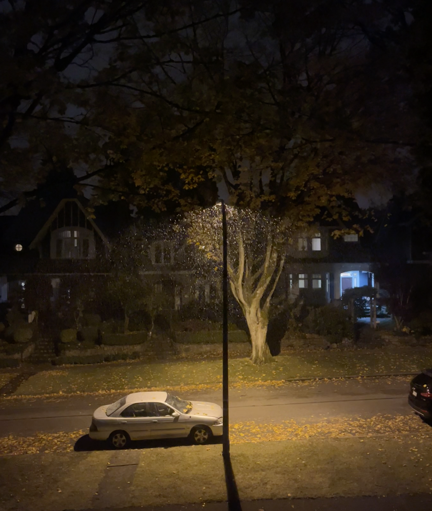

tw: abuse. This reflection serves as a sort of public journal entry. It talks about a lot of sensitive topics. If you choose to read, please do so with care and tenderness and treat it as if I shared it in confidence with you.

“Yet I live earnestly, building the most beautiful sandcastles I can, knowing they will be washed away. And getting others on the beach to build with me, at times even suspending our belief of the fact that it will disappear; letting ourselves be fooled for a moment that it will last.” Source
To my 2022 self,
You’ll be pleased to know that I’m continuing the tradition of writing letters to you (myself?) every year! This letter in particular, took me a really long time to figure out how to write properly.
You get to spend the first part of the year in some truly beautiful places with some wonderful company. You start the year in Montreal with some close friends from Verses, doing everything from talking grand plans about what the web might look like in the future to soaking in an outdoor hot tub on a freezing day. Hold these people close, they are a wonderfully thoughtful and quirky bunch that will feel like one big extended family.
Back in Vancouver, you convinced your friends to regularly make a trek down to the beach to enjoy sunset with you despite the hundreds of steps needed to get there. You became close with this little ragtag bunch and cried a bit when most of them graduated, knowing that it would be the last time you spend in close company for a while.
For perhaps the first time in your life, you felt a level of quiet confidence that allowed you to try something foolish and new. This conviction brought you to the South Bay to live with a motley crew of people. You decide to do a spontaneous writing trip down in Monterey Bay, road-tripped from SF to LA, and even hosted a small hackathon (I guess your days of event organizing never truly go away).
The theme, as you can probably tell, is good company matters. These people will inspire you to look deeper and notice all the casual magic in the world. They indulge your childlike curiosities and help bring out your favourite parts about yourself.
But, what’s a story without a little plot twist? Life has a certain way of throwing wrenches into your well crafted plans.
Visiting relatives for the first time in a while highlighted that certain people can also bring out the worst parts of yourself, sticking them out like welts on rotting skin. September to November happened to be periods of intense self-reckoning around your own self-worth as a person, friend, and partner.
People who claim they love you will tear at the very quiet confidence you worked so hard to build up over the year. They claim to do things out of love, but refuse to learn the way you want to be loved. It’s terrifying to realize that someone who claims to love you hurt you in ways that take advantage of that very fact. Sometimes the worst abuse happens under the guise of love and care.
It will exacerbate a lot of your anxieties around self-worth, trust, and will completely tank your physical and emotional wellbeing. I’ll give you a heads up here and tell you that going to therapy didn’t change things very much. There’s not much they tell you that you don’t already know. The real painful process here is learning to accept and move on from the fact that some people you care a lot about did some pretty fucked up things to you in the past.
There’s not much you can do to change their mind, or fix them or whatever. But what will help is realizing that trying to change their behaviour is not your responsibility. You will come to realize that there is no rhyme or reason to their actions at times and the mental gymnastics they do to justify their actions are not for you to untangle.
The key realization that will really help you start to move on is to treat their voice like a voice, but not the only one that matters. I’ll quote Kegan at length because I think he says it a lot better than I can.
Suppose you have a dog. A big-hearted, high-energy dog who begins to bark, and won’t shut up, every time someone approaches your door. Now one day your dog starts into howling something first. He sounds a terrible alarm. You look out the window and it’s just your friendly neighbourhood mailman. So what do you do? You aren’t going to shoot your dog dead. He’s a pain but you wouldn’t think of it. Your dog loves you. He barks to warn you when anyone approaches. He wants nothing bad to happen to you. That’s just how he is. Problem is, he’s completely indiscriminate. He thinks everyone’s a danger, barks at anyone who approaches… You’re going to have a look for yourself. You’re going to bend over and stroke your dog. ‘Down boy,’ you say. ‘It’s just the postman. No harm here, silly guy’
It sounds almost silly when its said out loud like this, but you will learn it with time. It’s not a process that is super linear either. There will be days you break down and won’t be able to leave the house, but it does get better.
You’ll start to settle back into old rhythms with school and pick up the guitar. You also start going to the gym regularly again because, goddamn people were right when they said how much of a mood booster exercise was.
You will make it to the end of the year, finally at a point where you feel well enough to reflect on the past and start thinking about the future again.
Learnings
- A yes means nothing if you never say no.
- Learning is learning. If you spend five hours on a problem and can’t figure out the answer, it doesn’t mean you haven’t learned, it means you spent five hours learning. Your brain has rewired and formed new attractor states, you’ve done necessary work, the activity you’ve done is called learning. (Source)
- Make 50 pounds of pots. Quantity is the journey to quality.
- “Choose joy. Choose it like a child chooses the shoe to put on the right foot, the crayon to paint a sky. Choose it at first consciously, effortfully, pressing against the weight of a world heavy with reasons for sorrow, restless with need for action.” (Source) Choose joy because what you look for in life is what comes your way.
Looking forward
Unlike last year, I think it would be a little silly to try to set rigid goals for myself. Some of my best moments this past year happened because I gave myself the flexibility, and free-time to do so.
To continue the trends of values I’d like myself to embody next year:
- I would like to be emotionally and physically well. I would like to be able to reach deep focus in whatever work I do and have the resources to be able to choose the work I find enjoyable.
- I hope you are ambitious in how you choose to cultivate spaces of joy and abundance in your life.
- I hope you give yourself the grace and time to do things that bring you into company with good people. I would like to be a great friend, family member, partner, and community member. I want to have the bandwidth to be generous to the people around me and the clarity to prioritize the important people in my life.
- I hope you continue to be someone who is mesmerized by the beauty of the world.
Kindly, Your present self